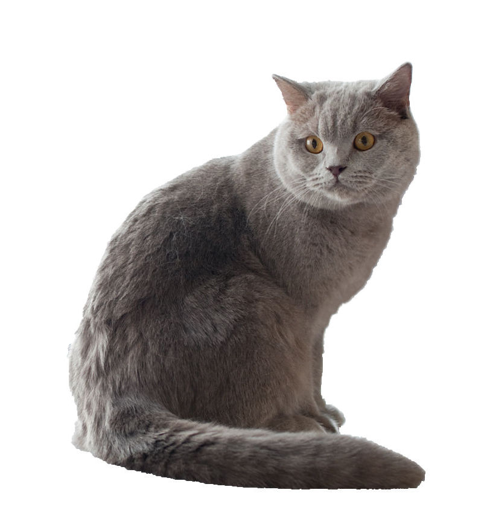

The
British
Shorthair
is
the pedigreed version of the traditional British domestic cat, with a
distinctively chunky body, dense coat and broad face. The most
familiar colour variant is the "British Blue", a solid
blue-gray with copper eyes, but the breed has also been developed in
a wide range of other colours and patterns, including tabby
and
colorpoint.
It is one of the most ancient cat breeds known, probably originating from Egyptian domestic cats imported into Britain by the invading Romans in the first century AD. In modern times it remains the most popular pedigreed breed in its native country, as registered by the UK's Governing Council of the Cat Fancy (GCCF).
The breed's good-natured appearance and relatively calm temperament make it a frequent media star, notably as the inspiration for Tenniel's famous illustration of the Cheshire Cat from Alice's Adventures in Wonderland. In the more modern era, a blue British Shorthair is the subject of the original "I Can Has Cheezburger?" image, credited with popularising the lolcat phenomenon.
References:
This article uses material from the Wikipedia article "British Shorthair”, which is released under the Creative Commons Attribution-Share-Alike License 3.0.
Picture:
Heikki
Siltala [CC BY
3.0], via
Wikimedia Commons
{kind=link}